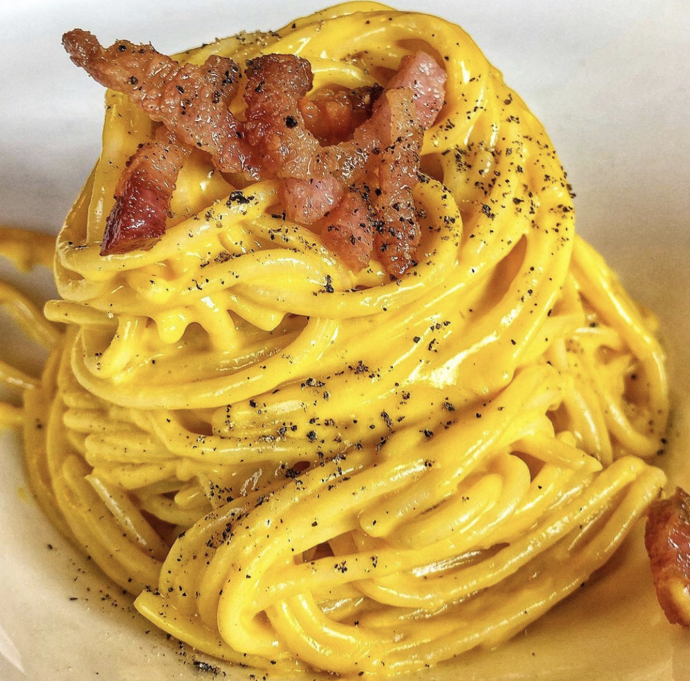

Spaghetti Carbonara

Description
Spaghetti alla Carbonara is a typical italian dish, born in the central region of the country.
The Carbonara sauce is named after the coal workers which invented it using some of the most available ingredients in the region: eggs, pepper and guanciale (pork cheek).
Its high energy content helped the workers withstand their incredibly hard working days.
Ingredients
The following ingredients are for 4 people:
- 380g of spaghetti
- 300g of guanciale
- 5 eggs
- pepper
- 100g of grated Parmigiano Reggiano
Steps
- Put the guanciale in a hot pan, and let it cook over high heat for around 5 minutes.
- Prepare the eggs, by beating them together with the pepper and the Parmigiano Reggiano.
- Cook the spaghetti "al dente"; put them in the pot only when the salted water is boiling, and stop the cooking 1-2 minutes earlier.
- Before draining the cooking water from the spaghetti, put 1 cup of it into the pan with the guanciale.
- Put the drained spaghetti into the pan, stir 20-30 seconds over high heat and add the beaten eggs.
- Turn the heat to the minimum and keep stirring until you get the typical Carbonara creamy look.
- Serve and eat!